Product Overview
Canvas Tarpaulins are manufactured using high-quality cotton fabric
and are known for their strength, breathability, and durability.
These tarpaulins are widely used where abrasion resistance and
long-term rugged performance are required.
Compared to plastic tarpaulins, canvas tarps offer better airflow
and heat resistance, making them suitable for covering goods during
transportation, storage, and outdoor operations.
Key Features
- Heavy-duty cotton canvas fabric
- High tear and abrasion resistance
- Breathable material reduces moisture buildup
- Suitable for repeated and long-term use
- Custom sizes and stitching available
Specifications
- Material: Cotton Canvas Fabric
- Thickness: Available in multiple GSM options
- Finish: Plain / Waxed / Treated (as required)
- Sizes: Standard and custom sizes available
- Colour: Natural / Olive / Brown
- Usage: Indoor and outdoor applications
Applications & Use Cases
- Truck, trailer, and cargo covering
- Industrial equipment protection
- Warehousing and storage covering
- Construction sites and material protection
- Outdoor and temporary shelters
Best Suited For
- Truck operators transporting goods over long distances
- Goods requiring ventilation to prevent moisture damage
- Rough handling environments where abrasion resistance is critical
Selection Note
For Indian transport conditions, higher GSM canvas is recommended
for highway movement and repeated loading. Waxed or treated canvas
should be selected where rain exposure is frequent.
Commonly Used Along With
- Ropes or Lashing Belts for securing loads
- Tarpaulin Eyelets for reinforced fastening
- Tarpaulin Repair Tape for on-site fixes
Product FAQs
-
Is canvas tarpaulin waterproof?
Plain canvas is water resistant but not fully waterproof.
Waxed or treated canvas is recommended for protection during rain
or prolonged outdoor exposure.
-
What GSM should be selected for truck covering?
Higher GSM canvas is preferred for long-distance highway transport
and frequent loading, as it provides better durability and tear resistance.
-
Why choose canvas over plastic tarpaulin?
Canvas tarpaulins offer better breathability and heat resistance,
reducing condensation and moisture damage to goods.
-
Are canvas tarpaulins suitable for Indian weather conditions?
Yes. Canvas tarps perform well in hot climates and dusty conditions.
Treated canvas is recommended in regions with frequent rainfall.
-
Can canvas tarpaulins be repaired on site?
Yes. Minor tears can be repaired using tarpaulin repair tape
or patch stitching, extending service life.
-
Are custom sizes and eyelets available?
Yes. Canvas tarpaulins can be supplied in custom sizes with reinforced
eyelets based on specific application requirements.
 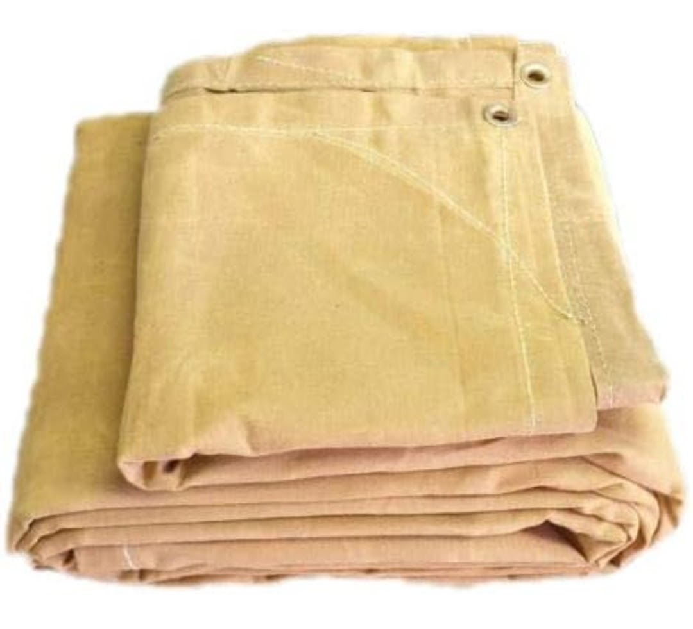
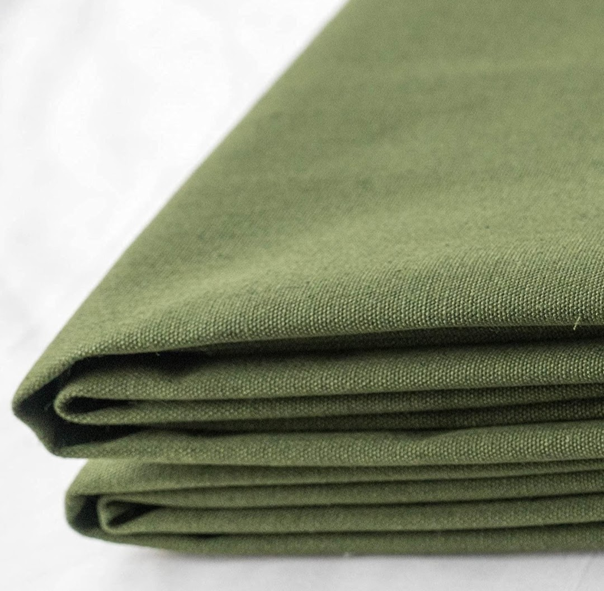
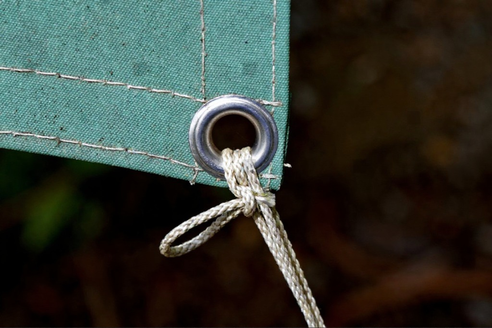
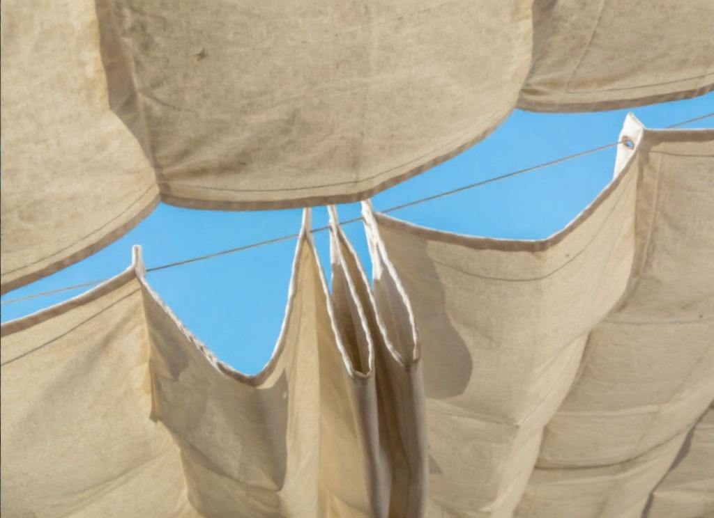
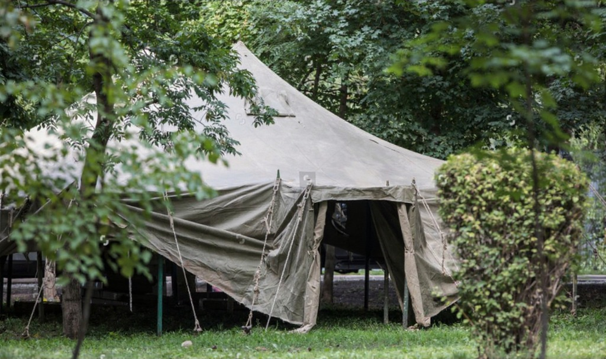
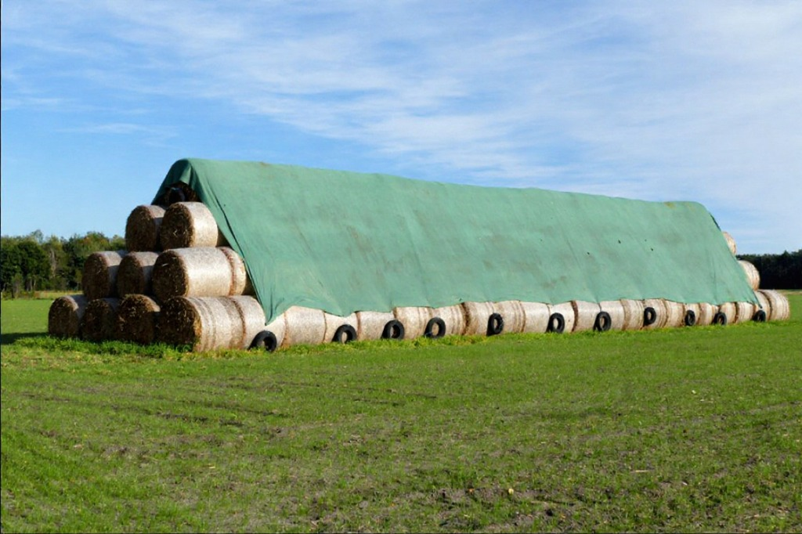
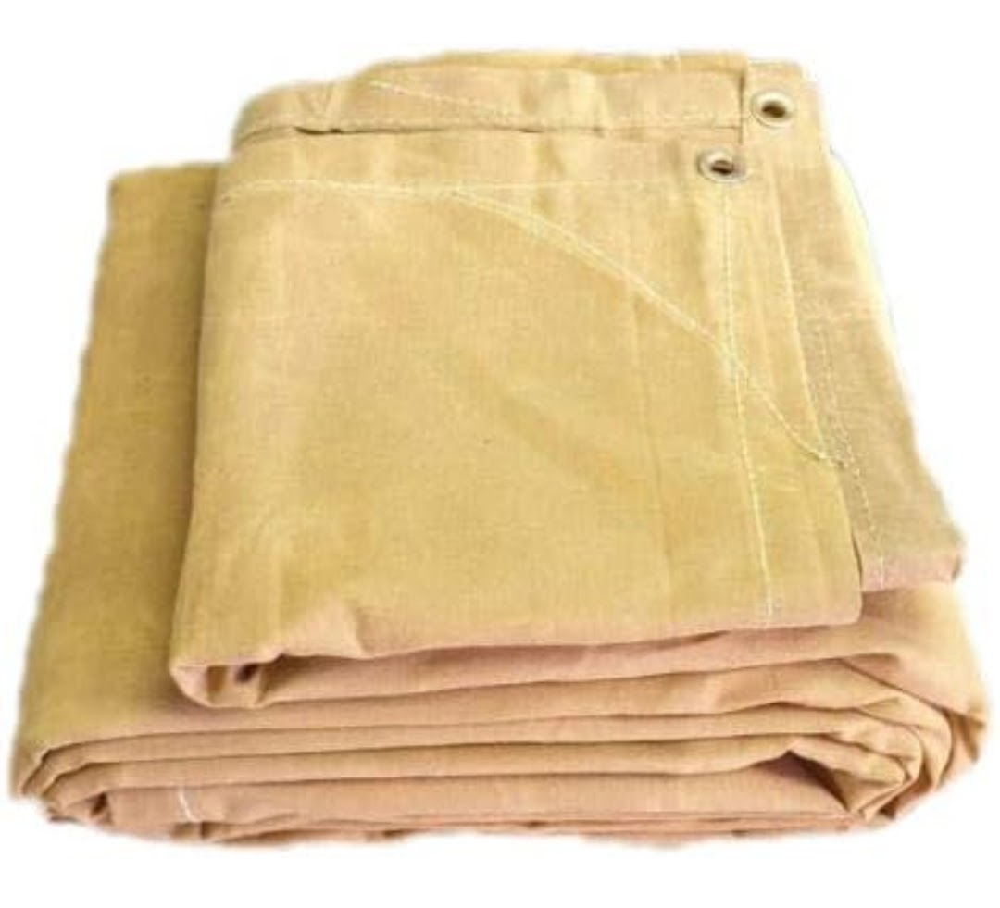
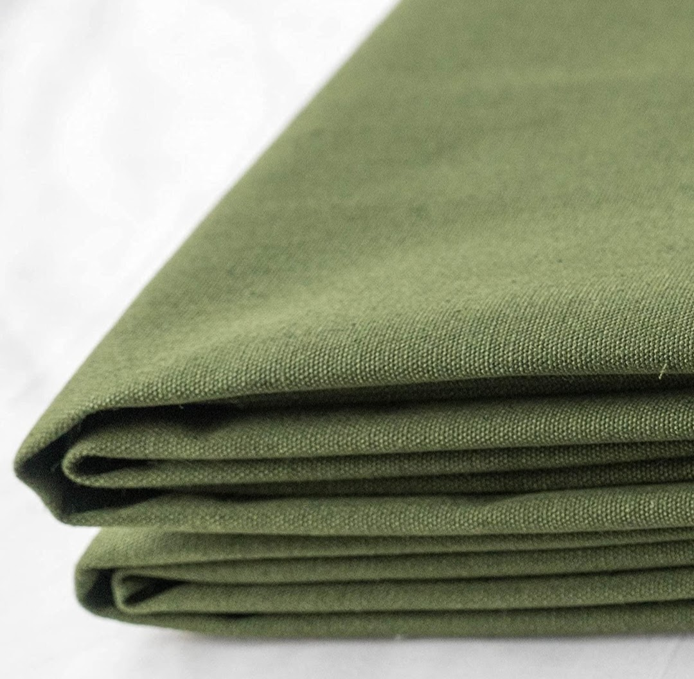
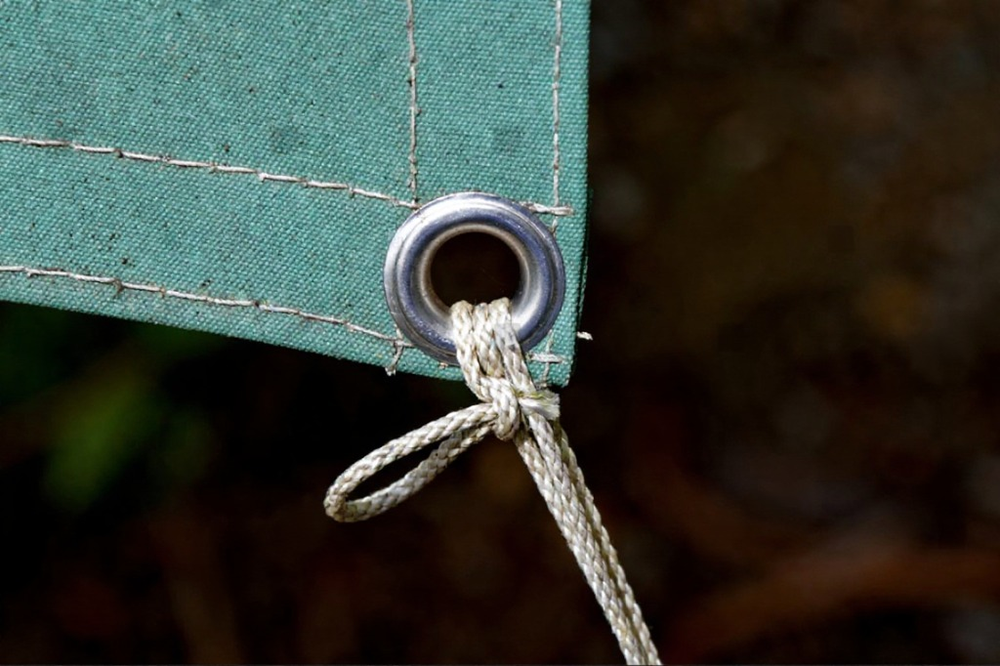
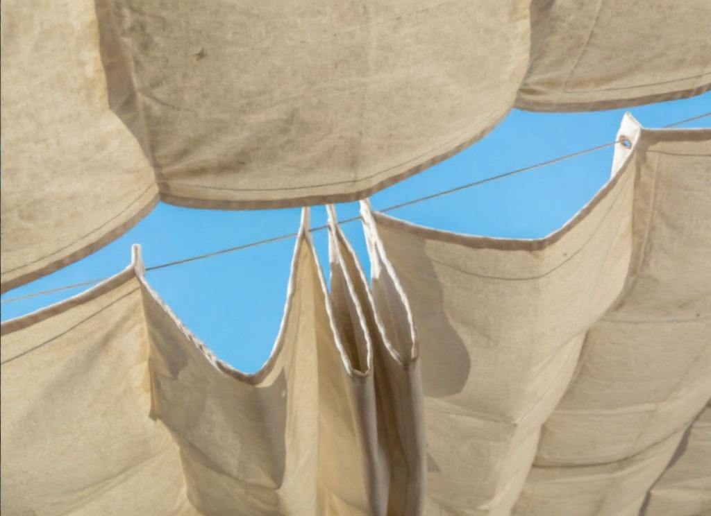
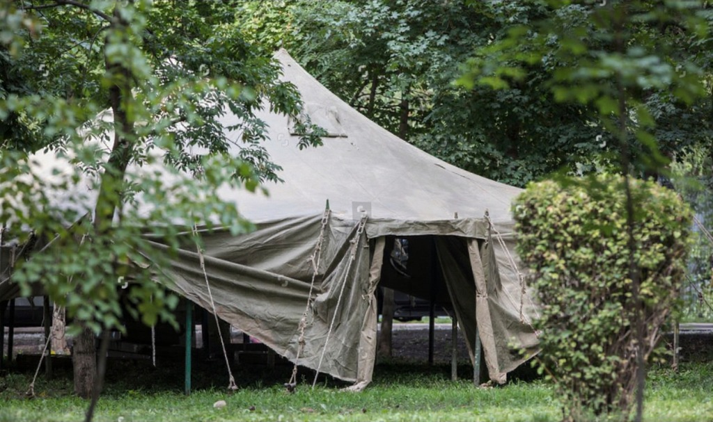
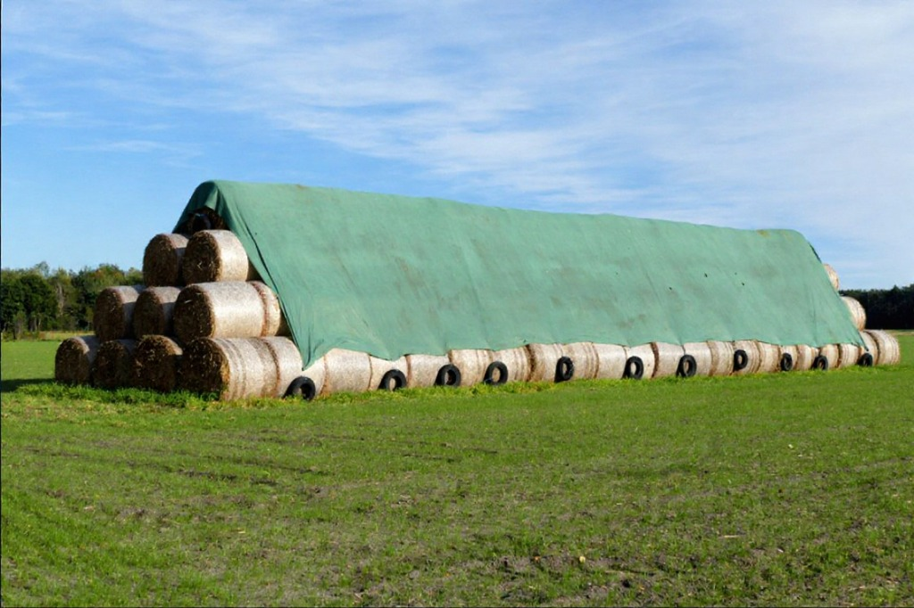